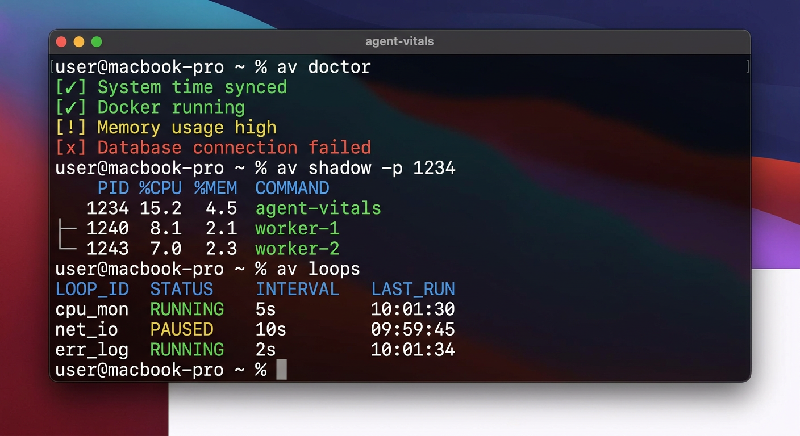
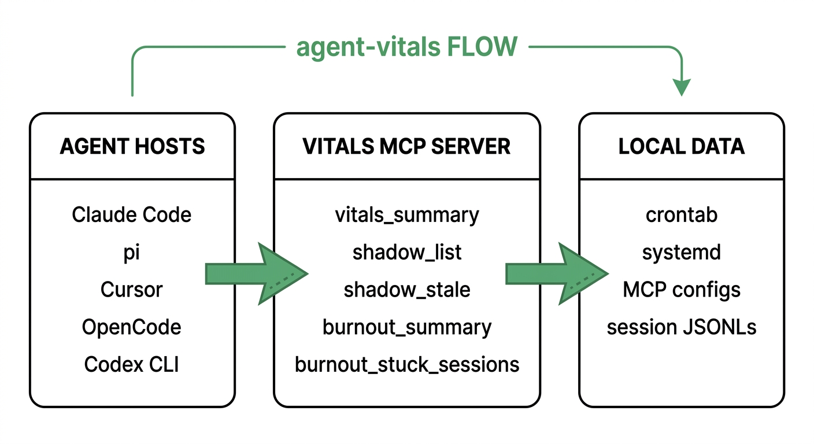

Extracts what's actually scheduled and running on your machine, cron, systemd, MCP servers, skills, and hands your agent a health check before it touches any of it.
No dashboard, no telemetry sent anywhere. Everything runs against local session logs and system state, then feeds back into the same agent that's using it.

Per-agent completion rates, stuck-session heuristics, and exact plus soft loop detection across Bash and Edit calls, excluding legitimate polling.
Model-aware pricing with an Effective Tokens metric, plus per-server and per-tool usage. GitHub measures 8 to 12KB overhead per unused MCP tool, per turn.
Recorded session forensics for Claude Code and pi. list · summary · replay · diff · errors · profile · grep · export · watch · suggest. No payloads, no secrets.
PATH wrappers around crontab and systemctl that gate mutations until vitals data is fresh, so your agent checks before it changes something scheduled.
When your agent calls vitals_summary, this is what comes back, straight from your own machine.
Three hops: your agent host calls the MCP server, the server reads local state, nothing leaves the machine.

Detects pi, Claude Code, Cursor, OpenCode, and Codex CLI, and wires the MCP server plus a priming skill into whichever ones you run.
Restart your agent host afterward. The next session calls vitals_summary automatically before anything risky.